Ressources Humaines¶
Important
Documentation
Le module de ressources humaines a été développé par un contributeur externe SALTO CONSULTING. Les explications ci-dessous ont été tirées des instructions, fournies en français uniquement, avec le module. * La documentation française sur la mise en œuvre des absences réglementées est disponible sur la page de téléchargement.
Le module RH a été créé pour être facilement adapté à la loi française, mais il peut être entièrement paramétré selon les droits de n’importe quel pays.
Cette section permet de gérer les Ressources Humaines de la société.
Ce système vient en complément des standards de la gestion des absences.
Utilisé pour gérer les absences qui doivent être validées, contrôlées et avoir des valeurs à réglementer selon la loi française.
Commencez par définir les :
Vous pouvez choisir le standard de droit aux congés pour chaque type de contrat. L’employé peut réserver des périodes d’absence selon ses droits.
vous pourrez gérer :
Les quantités acquises sur une période de temps.
La période de validité d’une quantité d’absence.
La possibilité de prendre des absences par anticipation sur la période en cours d’acquisition.
Le nombre de jours avant et après lequel la demande d’absence peut être faite.
Définir des règles d’acquisition spécifiques.
valider ou rejeter une demande d’absence.
Note
Un projet dédié à ces absences réglementées est créé et permet de stocker les jours d’absence demandés comme temps planifié et les jours d’absence validés comme temps de travail, permettant ainsi d’intégrer ces absences dans la planification.
Note
Le calcul du nombre de jours représentés par une absence est effectué sur la base des jours ouvrés.
Les jours ouvrés sont définis dans Paramètres globaux et calendrier associé à l’employé : jours fériés, jours non ouvrés.
Paramètres environnementaux¶
Les propriétés ci-dessous ne sont visibles que lorsque le module RH est activé.
Employé
Un employé est une ressource dont la propriété « est un employé » est cochée dans l’écran des ressources.
Une fois les ressources enregistrées comme employés, vous les affectez à un gestionnaire des absences.
Ce même manager pourra gérer ses employés depuis l’écran des employés.
L’employé peut voir la personne qui gère ses périodes de congé.
Chaque fois qu’un employé est défini, un contrat par défaut est automatiquement créé à la date d’entrée de la ressource si elle est renseignée.
Si la date n’est pas spécifiée, la date actuelle lors de la création est récupérée.
Important
Une erreur de calcul peut se produire si la date d’entrée n’est pas saisie. Dans ce cas, sur l’écran des ressources :
décochez la case est un employé,
renseignez la date d’entrée,
enregistrez,
cochez à nouveau est un employé.
Le calcul des droits sera alors réinitialisé avec la nouvelle date.
Gestionnaire des employés
Un manager est une ressource dont les propriétés « est un employé » et « est gestionnaire des absences » sont cochées.
La gestion d’un employé est datée, ce qui permet de changer de manager ou de déléguer temporairement la gestion à un autre manager (absences).
{kind=link}
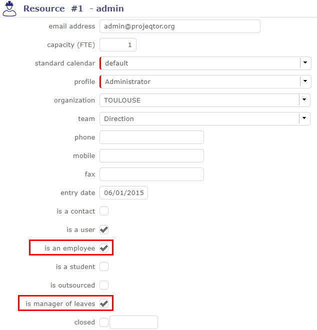
La case « est un employé » et « est gestionnaire des congés » est cochée¶
Un manager doit être un employé.
Un gestionnaire d’employés peut faire des demandes d’absence à la place des employés.
Il peut valider ou rejeter les demandes d’absence des employés qu’il gère.
Important
Le gestionnaire des absences gère les absences des employés qui lui sont rattachés. Il n’a pas accès aux paramètres du module. Il n’a pas de rôle d’administrateur.
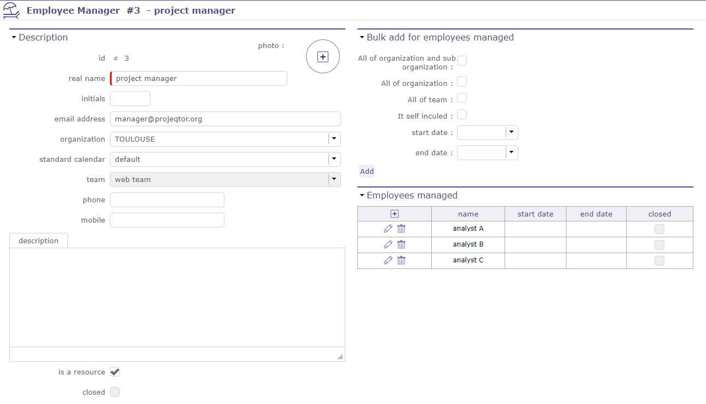
Écran du manager¶
Administrateur du système de congés
Il est l’administrateur du système de congés. Il définira les types de congés, les types de contrats, …
Pour pouvoir gérer et configurer le module des ressources humaines après son installation, vous devez accéder aux paramètres globaux.
Une section RH supplémentaire spéciale vous permet de définir l’administrateur des absences et des droits réglementés.
Si un employé n’a pas de manager, l’administrateur du module d’absences réglementées agit en tant que manager.
L’administrateur est obligatoirement un gestionnaire de congés
Avertissement
Lorsqu’une ressource n’est plus « utilisée », tous les éléments du module d’absences réglementées sont supprimés par le module :
Affectations aux activités associées au type d’absence
Temps passé généré suite aux demandes d’absence validées
Temps planifiés générés en raison des demandes d’absence non encore validées
Demandes d’absence
Droits acquis
Contrats
Liens avec ses managers
Tableau de bord des congés¶
Un tableau de bord est disponible pour les gestionnaires des absences
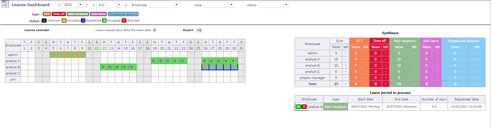
Tableau de bord des congés¶
La barre de filtres vous permet de filtrer les informations présentées dans le tableau de bord
Barre de filtres¶
Le calendrier des congés affiche les informations en fonction des filtres appliqués par l’employé géré
Le vous indique que la demande a été faite en retard
Vous pouvez exporter le calendrier au format Excel
Synthèse
La synthèse est également affichée selon les filtres sélectionnés au préalable,
et donne le nombre de jours restant à prendre par type de congé et employés gérés
Période de congé à traiter
Dans cette section, apparaît la liste des absences à traiter, c’est-à-dire sous le statut « enregistré »
Types de congés¶
Cette partie vous permet de créer les types d’absences réglementées.
Une activité correspondante (= nom du type d’absence) est créée sur le projet dédié à la gestion des absences.
Tous les employés (ressource enregistrée comme employé) sont affectés à cette activité
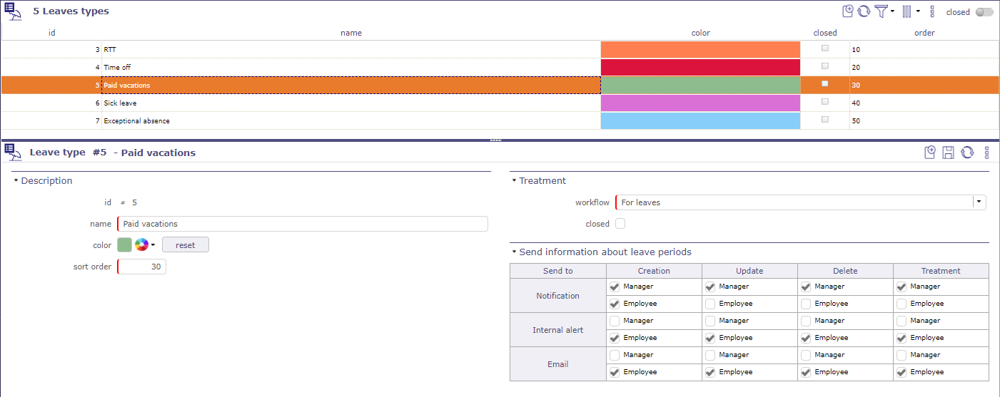
Écran des types de congés¶
Vous pouvez choisir le workflow qui sera attaché aux ressources humaines
vous pouvez définir qui reçoit une alerte interne ou un e-mail lors de la création, la mise à jour, la suppression et/ou le traitement des congés
Voir aussi
Plus de détails sur les Valeurs contractuelles, voir Droits acquis
Type de contrat de travail¶
Cette section vous permet de créer les différents contrats en vigueur dans votre entreprise
Les types de contrats permettent d’avoir des règles d’acquisition de différentes absences réglementées selon le contrat de travail d’un employé
Vous ne pouvez avoir qu’un seul type de contrat par défaut
Note
exemple en France
Contrat cadre = Aucune règle d’acquisition
Contrat cadre à temps plein = RTT
Contrat cadre à temps partiel = Pas de RTT
etc.
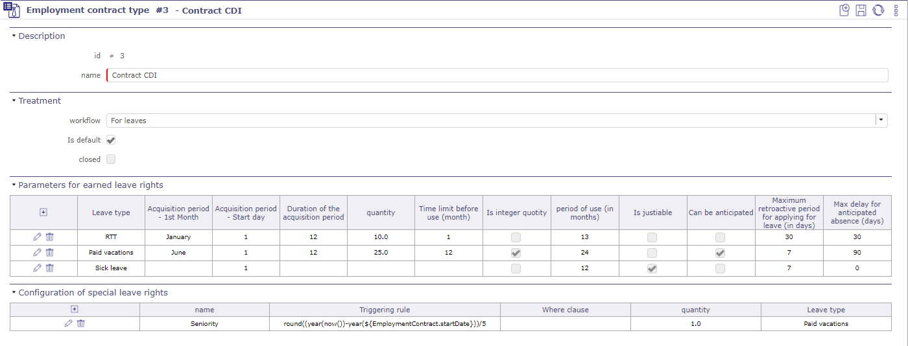
Écran du type de contrat de travail¶
Voir aussi
Plus de détails sur les valeurs contractuelles, voir Droits acquis
Paramètres pour les droits aux congés acquis
Dans cette section, vous pouvez définir quels types d’absences réglementées seront attachés à ce type de contrat.
Si vous avez créé plusieurs types d’absences réglementées et les avez attachés à tous vos contrats (case à cocher sur défaut ou sur tout), ces types seront visibles dans cette section.
S’il vous manque des types d’absences, vous pouvez les créer depuis cet écran :
Cliquez sur le bouton

Une fenêtre contextuelle s’ouvre et propose de renseigner les mêmes champs que sur l’écran des types d’absences réglementées
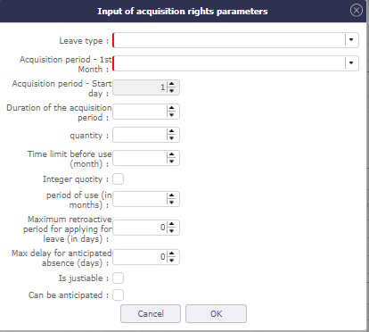
Droits de congés spéciaux¶
Voir aussi
Plus de détails sur les Valeurs spécifiques, voir Droits acquis
Configuration des droits de congés spéciaux
Les règles d’acquisition spéciales sont des règles qui ne peuvent pas être exprimées avec les valeurs des règles d’acquisition standard
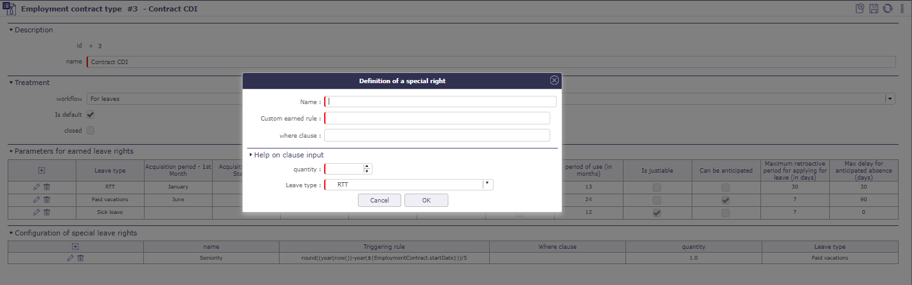
Droits de congés spéciaux¶
règles d’acquisition personnalisées :
Définissez la règle d’acquisition spéciale basée sur les valeurs d’attributs d’une entité ProjeQtOr.
Cette règle suit le vocabulaire du langage SQL
clause where
Condition d’application du droit spécial
cette clause suit le vocabulaire du langage SQL
Important
pour obtenir de l’aide sur les fonctions SQL que vous pouvez utiliser, cliquez sur la barre de section aide sur la saisie de clause
Une nouvelle partie apparaît et propose des menus déroulants avec des requêtes SQL pré-enregistrées
Quantité
Nombre de jours supplémentaires acquis calculés suite à l’application de la règle d’acquisition spéciale
Cette règle suit le vocabulaire du langage SQL
Type de congé
Le type d’absence réglementée auquel sera attachée la règle d’absence spéciale.
Motif de fin de contrat de travail¶
Vous permet d’enregistrer les différents types de fin de contrat.
Note
Pourquoi mettre fin à un contrat ?
Démission
Changement de statut (non-cadre -> cadre)
Changement de la quotité (100 % -> 80 %)
Partir à la retraite…
Ces différentes raisons peuvent entraîner des modifications dans les règles régissant l’acquisition des droits d’absence.
Droits aux congés acquis¶
Sur cet écran, vous pouvez voir vos droits aux congés acquis depuis le début de votre contrat.
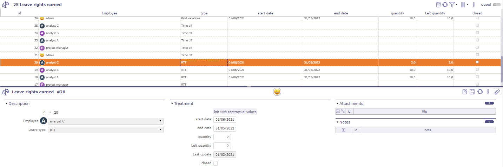
Droits aux congés acquis¶
Les dates de début et de fin correspondent à la période sur laquelle les jours de congé sont calculés
Le nombre de jours acquis et restants pour chaque type
Si vos congés dépassent la période de référence et selon le type de congé, la case à cocher « clos » est validée.
Vous n’avez plus ce type de congé disponible et ne pouvez plus en demander
Contrat de travail¶
Vous pouvez voir les détails des contrats et quel employé leur est rattaché.
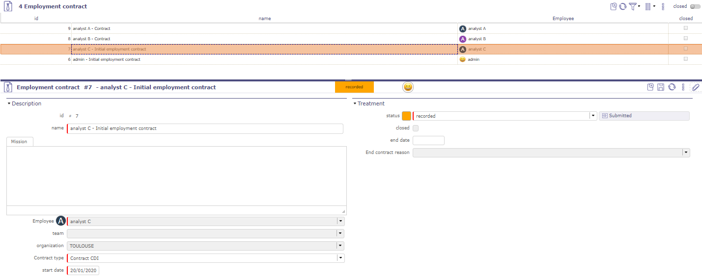
Droits aux congés acquis¶
Paramètres des congés réglementés
La réglementation des absences est basée sur les droits à prendre des absences acquis sur une période donnée.
Elle est donc basée sur des valeurs à donner aux attributs de réglementation selon le type d’absence (ex : Congés payés, RTT, congés maladie, congés légaux, etc.), et le type de contrat associé à l’employé (Ex : Temps plein, Temps partiel).
Acquisition générale des droits
Lorsque vous créez un Type de contrat de travail, vous avez plusieurs valeurs contractuelles à renseigner.
Valeurs contractuelles pour le type de congé¶
Avertissement
Case à cocher « Sur défaut » et « sur tout »
Si vous cochez sur « défaut », les valeurs saisies se refléteront uniquement sur le type de contrat par défaut.
Si vous cochez sur « tout », les valeurs saisies seront sur tous les types de contrats.
Ces valeurs ne peuvent pas être modifiées après leur enregistrement.
Pour tout changement, la création d’un nouveau type d’absence est nécessaire.
Champ |
Description |
|---|---|
mois de début de période |
mois démarrant la période de référence des congés payés dans votre pays. |
jour de début de période |
jour démarrant la période de référence des congés payés dans votre pays. |
durée de la période |
La durée de la période donne le nombre de mois sur lesquels votre période de référence s’étendra. |
quantité |
le nombre de jours de congé qui seront payés pendant la période de référence. |
période des droits aux congés acquis |
le nombre de mois avant de pouvoir utiliser vos jours acquis. |
entier quotité |
Possibilité d’arrondir les congés acquis. |
durée de validité |
période pendant laquelle les jours de congé acquis seront conservés. Au-delà de cette période, les congés acquis sont perdus. |
est justifiable |
définit si l’absence doit faire l’objet d’une demande de justificatif |
peut être anticipé |
Si le congé peut être pris avant la période d’acquisition |
délai maximum pour absence rétroactive (jours) |
permet, ou non, d’enregistrer des absences en congés payés après avoir été effectivement absent. |
délai maximum pour absence anticipée (jours) |
Nombre de jours avant lequel une demande peut être faite |
Note
En France, un employé a droit à 2,5 jours de congé par mois de travail effectif chez le même employeur, soit 5 semaines par année complète de travail (du 1er juin au 31 mai)
Acquisition spécifique des droits
Pour intégrer des droits d’absence spécifiques, le concept de droits spéciaux a été mis en place.
Les entités utilisables sont :
Absences
Employés
Contrats
Droits acquis
Valeurs contractuelles pour le type de congé¶
Champ |
Description |
|---|---|
Nom |
Le nom à donner au droit spécial |
règle d’acquisition personnalisée |
La règle permettant le calcul d’un nombre de fois pour appliquer la quantité de droit à l’absence |
clause where |
Condition d’application du droit spécial |
Quantité |
La quantité élémentaire du droit spécial |
Type de congé |
Le type d’absence auquel s’applique le droit spécial |
Enregistrement des absences¶
Calendrier des congés¶
Les absences réglementées sont effectuées soit par les employés, soit par leur manager
Les absences peuvent être enregistrées depuis le calendrier des congés
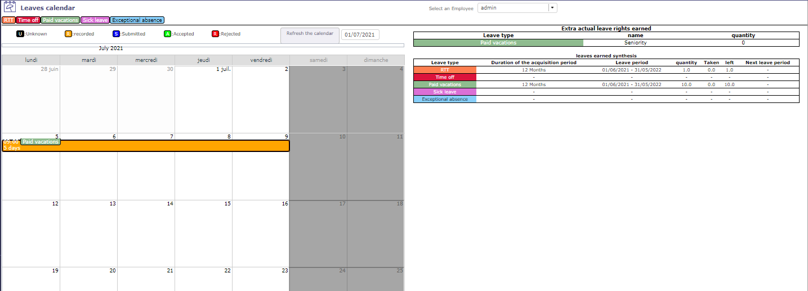
Calendrier des congés¶
Pour enregistrer ou modifier vos absences, double-cliquez sur une date ou une absence existante
Une fenêtre contextuelle s’ouvre pour afficher les propriétés d’une absence (date et type d’absence…)
Le type d’absences visible dans la liste déroulante dépend de ceux enregistrés dans le contrat de l’employé.
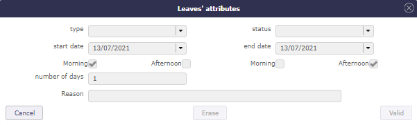
Attributs des congés¶
Après validation, le congé apparaît dans le calendrier.
Le manager (et/ou l’administrateur) peut valider ou non, le congé des employés.
Lorsque la période de congé est rejetée, il est impossible d’ajouter un nouveau congé sur ces mêmes dates
La couleur des congés changera selon la validation.
Périodes de congés¶
Les absences réglementées sont effectuées soit par les employés, soit par le gestionnaire des congés.
Les absences peuvent être enregistrées depuis l’écran des Périodes de congés.
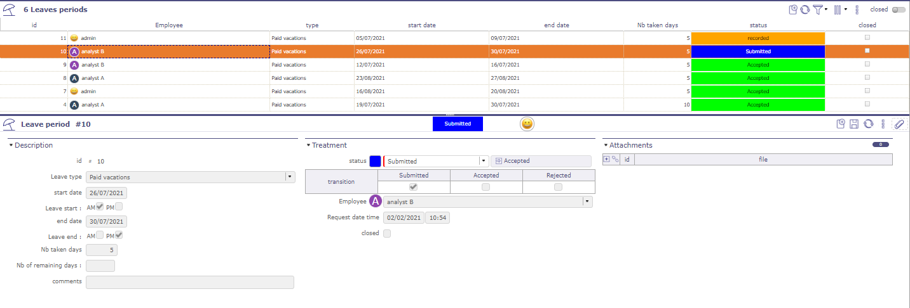
Périodes de congés¶
Sur cet écran, vous pouvez enregistrer, modifier, supprimer une demande de congé, comme dans le calendrier des congés.
L’employé peut enregistrer et soumettre ses congés.
Seuls le Gestionnaire des congés et l”Administrateur du système de congés peuvent modifier le statut d’une demande d’absence soumise à acceptée ou rejetée.
Système de congés¶
habilitation¶
Vous permet de restreindre la vue des écrans du module Ressources Humaines aux types de profils d’employés.
Ils peuvent avoir un accès visualiser - lire - créer - mettre à jour et/ou supprimer
Workflows et valeurs¶
Lorsque vous installez le module d’absences réglementées, un workflow pour les absences est créé.
Vous pouvez le modifier et le supprimer comme tout autre workflow.
Une nouvelle section est disponible dans la liste des valeurs pour les rapports.
La section congés réglementés vous permet de déterminer le comportement des états du workflow des absences.
Cela peut également déclencher une alerte et/ou envoyer un mail
Statut des congés¶
Avec l’activation du module RH, un workflow d’absence est ajouté avec 3 états, accessibles et personnalisables dans les systèmes d’automatisation.
Enregistré
Statut de création. Dans cet état, toutes les données de l’absence peuvent être modifiées.
Soumis
Ce statut signifie que l’employé a envoyé sa demande de congé à sa hiérarchie pour validation.
Validé
État que seuls le manager et l’administrateur du module peuvent activer.
Lorsque la demande de congé est validée ou refusée, le statut de la demande ne peut plus être modifié
Annulé
État que seuls le manager et l’administrateur du module peuvent activer.
Le nombre de jours que représente l’absence n’est pas pris.
Lorsque la demande de congé est validée ou refusée, le statut de la demande ne peut plus être modifié
Gestion des compétences¶
La gestion des compétences permettra de renseigner les compétences de chaque ressource avec un niveau de compétence très précis.
Vous pouvez ensuite rechercher les ressources appropriées pour une activité à un moment donné pour la compétence de votre choix.
Compétences¶
Enregistrez les différentes compétences que vous trouvez dans votre domaine d’activité.
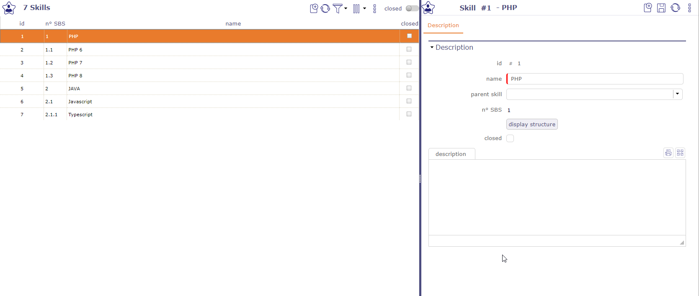
Écran de gestion des compétences¶
Les compétences peuvent être divisées en sous-compétences sans limitation de niveau.
Le bouton « afficher la structure » vous permet d’afficher la SBS (Structure de Décomposition des Compétences) de la compétence sélectionnée avec une indentation des sous-compétences pour une meilleure visibilité.
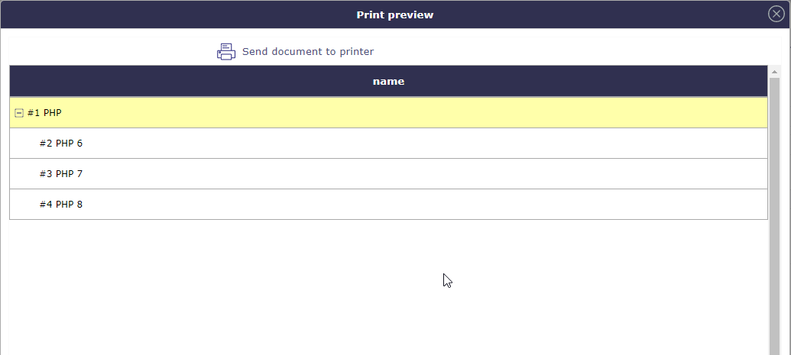
SBS - Structure de décomposition des compétences¶
Niveaux de compétences¶
L’écran des Niveaux de compétences vous permet d’enregistrer des niveaux pour chaque compétence.
Par exemple débutant, moyen, bon, expert…
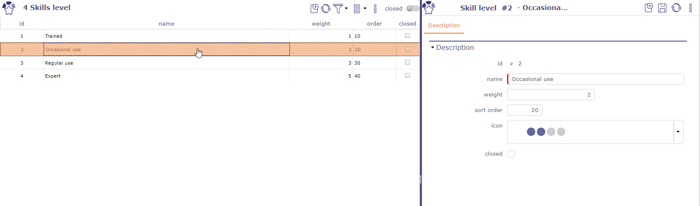
Écran des niveaux de compétences¶
Vous définissez ensuite pour chacune des ressources les compétences et le niveau qui leur est associé.
Vous pouvez sélectionner plusieurs compétences différentes dans la liste déroulante en utilisant les touches Contrôle ou Maj.
Une icône peut être associée au niveau de compétence. ProjeQtOr a fourni des icônes pour un maximum de 4 niveaux.
Vous pouvez créer vos propres icônes et les placer dans www\projeqtorVX.xx\view\icons.
Compétences des ressources
Lorsque les compétences et les niveaux de compétences sont définis, vous pouvez les associer à vos ressources.
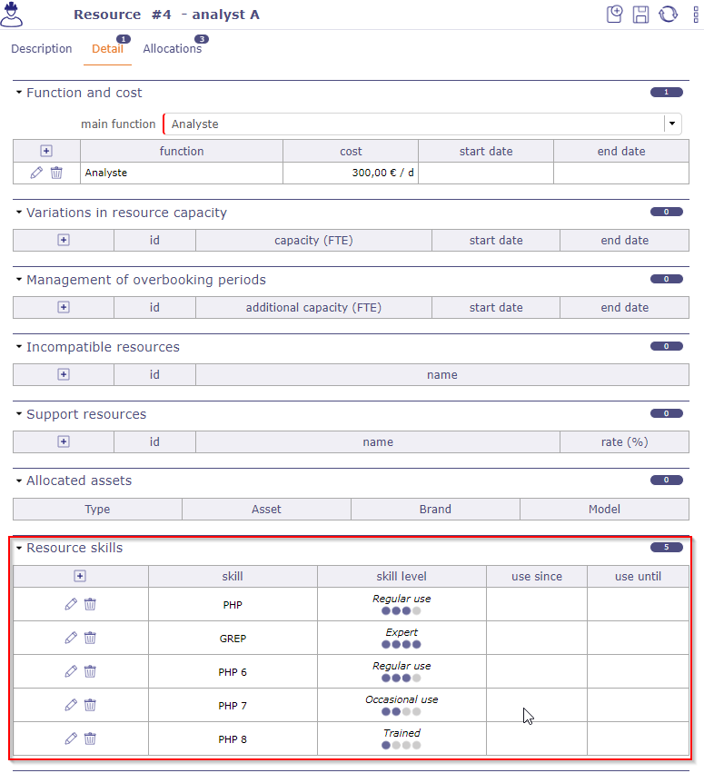
Écran des ressources avec plusieurs compétences et niveaux de compétences¶
Les ressources avec des compétences apparaîtront sur l’écran de recherche par compétences.
Compétence hiérarchique¶
Sur cet écran, vous voyez toutes les compétences et leur hiérarchie. C’est la structure complète pour toutes les compétences combinées.
Vous pouvez les déplacer et les réorganiser en utilisant les poignées devant les noms.
Les indices de décomposition de la SBS (structure de décomposition des compétences) sont dynamiques et seront modifiés selon l’ordre croissant qu’ils occupent.
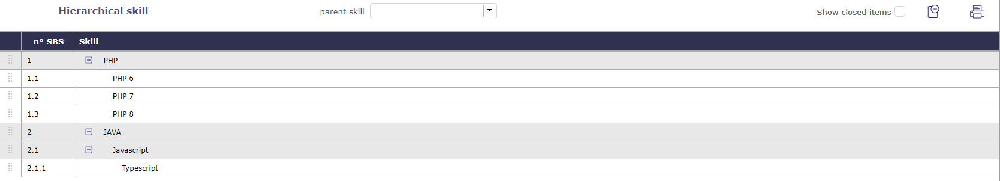
Écran des compétences hiérarchiques¶
Recherche par compétence et disponibilité¶
Lorsque vous avez besoin d’une compétence particulière sur une période de temps, l’écran de recherche par compétences affiche toutes les ressources.
De nombreux filtres vous permettront de trouver la ressource idéale en fonction des besoins des tâches à réaliser.
Filtres¶
Compétence et niveau
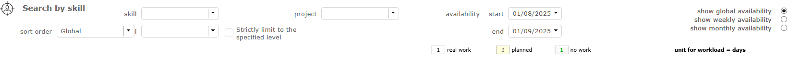
Filtres sur l’écran de recherche par compétences¶
Sélectionnez la compétence dont vous avez besoin. Le niveau de compétence n’est pas obligatoire mais utile pour plus de précision.
Une sélection initiale vous est proposée en fournissant uniquement la compétence.
Vous pouvez classer les résultats obtenus en fonction de la pertinence et de la disponibilité ou globalement en tenant compte de ces deux critères.
Le tri sera effectué pour chaque ligne de compétence.
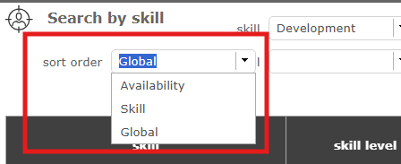
Triez selon vos besoins¶
La sélection d’un niveau de compétence permet de réduire la liste à des résultats plus pertinents.
Cependant, même si vous choisissez un niveau spécifique, des ressources ayant la même compétence mais un niveau différent peuvent encore apparaître.
Cela vous donne des alternatives au cas où la ressource idéale ne serait pas disponible pendant la période de temps requise.
Si vous souhaitez ne voir que les ressources ayant exactement la compétence et le niveau que vous avez sélectionnés, cochez la case « Limiter strictement au niveau spécifié ».
Dates et périodes
Les dates de début et de fin sont pré-remplies et correspondent à la date actuelle pour une période d’un mois.
Si vous choisissez un projet particulier, les dates validées du projet sont récupérées.
Les ressources correspondantes sont affichées et indiquent leur disponibilité sur les périodes saisies.
Cliquez sur pour affecter une ressource au projet de votre choix.
Cliquez sur  pour modifier l’affectation de la ressource sur le projet.
pour modifier l’affectation de la ressource sur le projet.
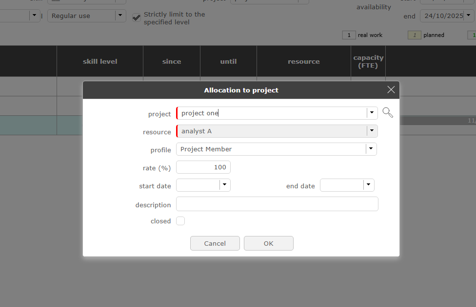
Écran de recherche par compétences¶
Astuce
Le calcul du taux de pertinence tient compte des paramètres de la ressource (ETP, planification, multi-projet, etc.) et du niveau de compétence demandé.
Le taux de pertinence est défini par un calcul simple. Taux de disponibilité x taux de compétence / 100.
Disponibilité¶
Vous pouvez consulter la disponibilité des ressources pour une compétence donnée de différentes manières.
Globalement sur la période demandée :
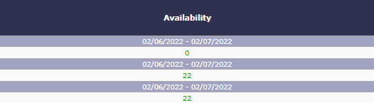
Disponibilité globale des compétences¶
Par semaine sur la période demandée :
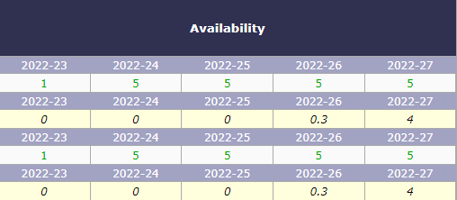
Disponibilité hebdomadaire des compétences¶
Mensuellement sur la période demandée :
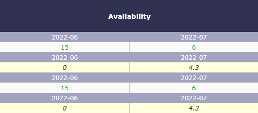
Disponibilité mensuelle des compétences¶
Recherche par compétences¶
ProjeQtOr propose un écran très simplifié pour la recherche de compétences.
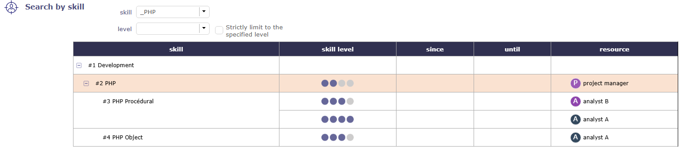
écran de recherche de compétences simplifié¶
Les informations de disponibilité, les dates et les périodes, ainsi que tout ce qui est lié au projet, ne sont pas disponibles sur cet écran.
Recherche sur activité¶
Vous pouvez avoir une aide à la décision directement sur les activités.
Vous sélectionnez les compétences nécessaires sur l’activité. Enregistrez-les dans l’onglet Détails > Section « compétences pour l’activité ».
Les compétences sont des éléments qui peuvent être copiés dans les options de copie d’une activité.
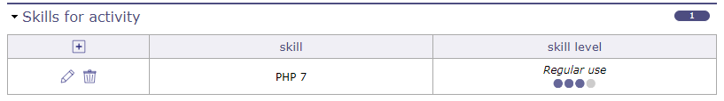
Compétences pour l’activité¶
Une fois les compétences liées à l’activité, dans le tableau des affectations, cliquez sur pour ajouter une ressource dans le tableau des affectations.
Cliquez sur la loupe dans la fenêtre contextuelle pour accéder au tableau des compétences.
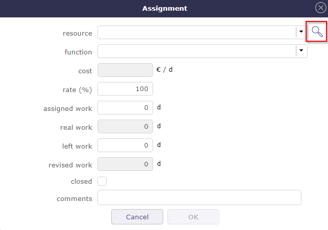
Compétence pour l’activité¶
Une fenêtre s’ouvre pour lister les ressources susceptibles de répondre à vos besoins.
Vous trouverez la même liste que pour une recherche de compétences sur l’écran dédié.
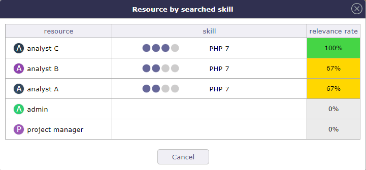
Recherche de ressources par compétences¶
Cliquez sur la ressource que vous souhaitez affecter à l’activité.